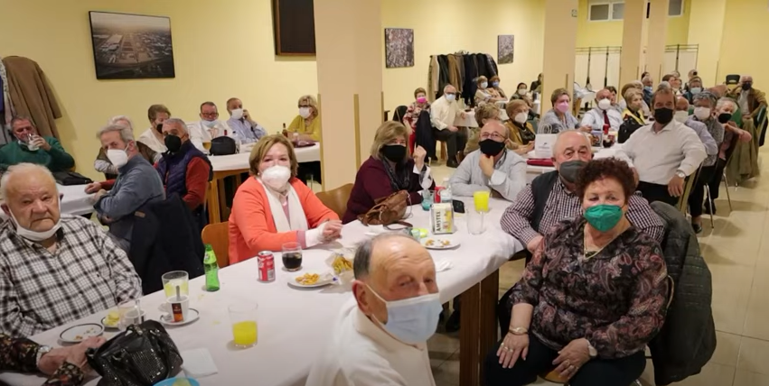

Dicho bar ofrece una serie de servicios los cuales son:
El servicio en barra como es de lógico es que el camarero ofrece una serie de bebdias y aperitivos durante el día a los socios de dicho bar, las comidas funcionan de manera que a través de la directiva se le informe al camarero de que se va a hacer una comida x día con x número de personas para que de manera dicha fecha tenga preparada cierta cantidad de comida según el número de personas que le hayan dicho que va a haber,bailes,gran parte de los bailes la preprara la directiva,mientras que el camarero no solo ofrece bebidas, sino que también ofrece de cenar,de seleccion a cenar que hay son:
Por ultimo las actividades,dichas actividades son preparadas por la directiva y por socios dl bar de manera qu epor la tardes o por las mañanas quien queira puede ir a las actividades preparadas.
